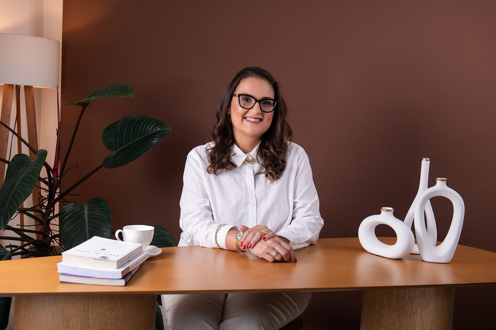

Assessoria de imprensa
Sua empresa na pauta, não no anúncio, local e nacional.
Reputação não se anuncia.
Se conquista.
Consultoria de comunicação empresarial e assessoria de imprensa para empresas e executivos que precisam ser reconhecidos como referência pelo que a imprensa registra a respeito deles, não pelo que eles próprios anunciam.
Quando uma empresa conquista um espaço na imprensa, ela não ganha apenas visibilidade. Ganha credibilidade, fortalece sua reputação e passa a ocupar um lugar de referência no mercado. Esse movimento também amplia a oportunidade de seus executivos, que passam a ser percebidos como referência e procurados como fontes qualificadas para entrevistas e análises.
Como isso funciona
A Ties Comunicação foi fundada em 2019 por Fernanda Thiesen Furtado, jornalista com 25 anos de atuação em comunicação empresarial, relações públicas e assessoria de imprensa, e com a leitura, vinda da redação, do que de fato vira pauta.
Conhecer a Ties25
anos de experiência em comunicação empresarial
2019
fundação da Ties Comunicação
02
graduações em Jornalismo e Letras
03
pós-graduações em Marketing, Comunicação Empresarial e Relações Públicas
Seis frentes que funcionam melhor combinadas: o que a imprensa publica, o que a empresa produz e o que a liderança assina fazem parte da mesma reputação.
Ver todos os serviçosDamos valor ao que merece ser dito.
Sua empresa na pauta, não no anúncio, local e nacional.
Apuração de verdade, para canais próprios e externos.
A opinião de quem lidera, escrita como se lê.
Autoridade construída em cadência, não em campanha.
Posicionamento, reputação e preparo de porta-vozes.
Alinhamento entre liderança, cultura e equipe.
O atendimento é direto com quem executa. Para eventos e coberturas maiores, uma rede de apoio (fotógrafo, designer e outros jornalistas) é acionada sob demanda.
Sem camadas de atendimento e sem rodízio de equipe: quem conversa com você é quem escreve, apura e liga para a redação.
Vinte e cinco anos entre grandes empresas, agências e redações. Antes de qualquer proposta, existe repertório de bastidor.
Texto que um editor aceita e que um leitor termina. Nem release genérico, nem jargão corporativo.
As frentes não são produtos separados: o que sai na imprensa alimenta o LinkedIn, e o que a liderança publica sustenta a próxima pauta.
Cada empresa tem um momento, um setor e um porta-voz. O plano é desenhado a partir disso, não de um pacote de prateleira.
A objeção mais comum não é preço, é não entender o que está sendo entregue. Este é o ciclo, do primeiro diagnóstico até a prestação de contas do período.
Dúvidas frequentesLeitura do momento da empresa, do setor e do porta-voz. O que existe de história real para contar, e o que ainda não está pronto para ir à imprensa.
Pauta apurada, texto escrito e oferecido a quem de fato cobre aquele assunto. Preparo do porta-voz antes de cada entrevista.
Ajuste de rota mês a mês: o que rendeu, qual veículo respondeu, qual ângulo precisa mudar. Comunicação em situações sensíveis entra aqui.
Ao fim do período contratado, todas as publicações conquistadas com a valoração de cada uma: quanto custaria comprar aquele espaço como anúncio pago.
Assessoria de imprensa não é você falando de você: é um terceiro decidindo que a sua história merece o espaço dele. Por isso o resultado é medido pelo que foi publicado, e pelo quanto aquele espaço valeria, se fosse comprado.
+25
anos de relacionamento com redações
2019
ano de fundação da Ties Comunicação
100%
dos atendimentos conduzidos diretamente pela fundadora
R$ 000
valoração acumulada das publicações conquistadas (a confirmar)
Prova social em texto, por escolha da própria consultoria: o que interessa é o que mudou na empresa depois da publicação, não a produção de um vídeo.
Depoimento a ser fornecido pelo cliente. O formato previsto é curto: o que a empresa buscava, o que foi publicado e o que mudou depois disso.
Nome do cliente
Cargo · Empresa · Setor
Depoimento a ser fornecido pelo cliente. Espaço reservado para um relato de executivo posicionado como fonte na imprensa do setor.
Nome do executivo
Cargo · Empresa · Setor
Depoimento a ser fornecido pelo cliente. Espaço reservado para um case de cobertura de evento, com a rede de apoio acionada.
Nome do cliente
Cargo · Empresa · Setor
É para pequenas e médias empresas, executivos e C-levels que já têm algo real acontecendo (um produto, um número, uma decisão, uma leitura de mercado) e precisam que isso seja reconhecido fora de casa. Não é para quem busca volume de posts, promessa de venda direta ou quem ainda não quer expor um porta-voz.
Começa por um diagnóstico do momento da empresa e do porta-voz. A partir dele, as pautas são apuradas, escritas e oferecidas aos jornalistas que realmente cobrem aquele assunto, com preparo do porta-voz antes de cada entrevista. O ciclo é acompanhado mês a mês e fecha com relatório e valoração.
Ao fim de cada período contratado, a empresa recebe um relatório com todas as publicações conquistadas e a valoração de cada uma, ou seja, quanto custaria comprar aquele mesmo espaço de mídia, se fosse anúncio pago. É um número comparável, no lugar de uma percepção.
A primeira conversa serve exatamente para isso e não tem custo. Se a leitura for de que ainda não é o momento, isso é dito com franqueza. Vale registrar também que uma estrutura enxuta permite um investimento bem abaixo do de uma grande agência, sem que a senioridade de quem conduz o trabalho mude.
Vamos conversar?
O ciclo costuma ser curto: uma conversa de diagnóstico, uma proposta e o começo do trabalho. Se preferir, o WhatsApp abaixo vai direto para a Fernanda.